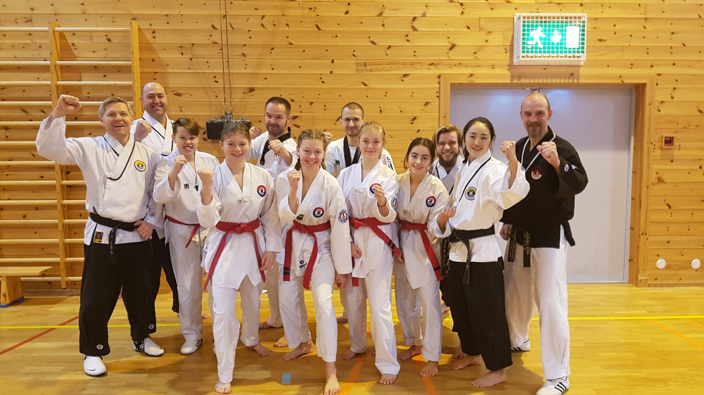
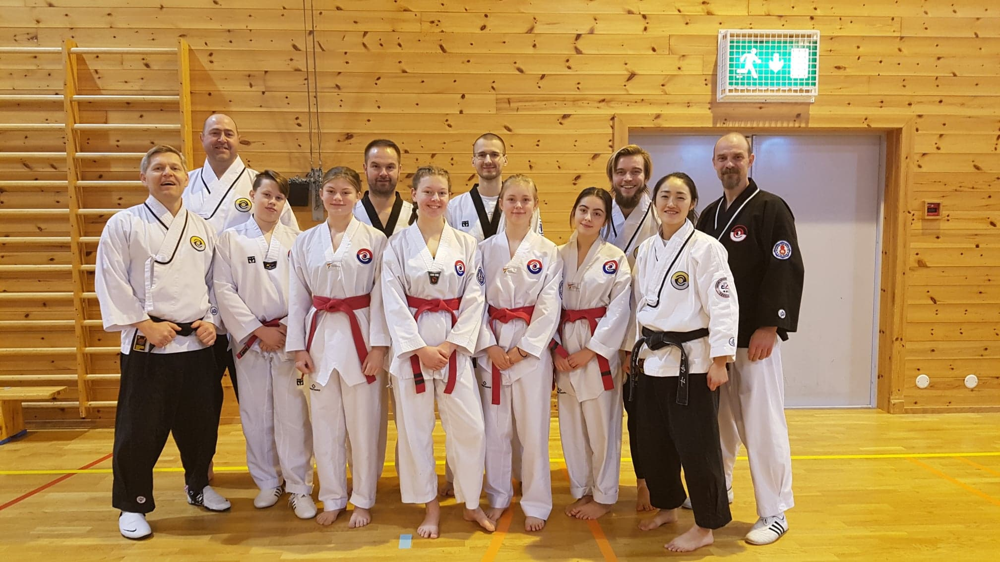

Innlegg
Lærerikt Dan-seminar hos Kvernbit Taekwondo Klubb

Denne helgen ble det arrangert Dan-seminar for rød- og svartbelter i Kvernbit. Det var en lærerik helg med masse fokus på pensum frem mot dan-gradering.
En ganske stor gjeng på 10 stykker fra Ringerike bestemte seg for å dra. "Kraftriket" var så snille og sponset oss med 3000kr til denne turen. Tusen hjertelig takk! Uten dere hadde vi ikke vært så mange som vi var på denne turen!
Seminaret varte fra fredag ettermiddag til søndag formiddag. Instruktørene var Master Anna Kim og Master Storli. Anna Kim trente svart-beltene, mens Storli trente rød-beltene.
Det ble undervist i mye pensum, blant annet TTU-poomser, hånd-, fot- og kombinasjonsteknikker. I tillegg var det to gjesteinstruktører til stede, Olav Tveiten og Lene Selvig Nesse, som instruerte i Jiu-jitsu og Yoga.
Hver trening varte omtrent i en time, og det var rundt seks treninger om dagen.
Det har vært en sosial, lærerik og morsom helg. Bli med neste gang du også vel!

Og igjen, tusen takk til "Kraftriket"!